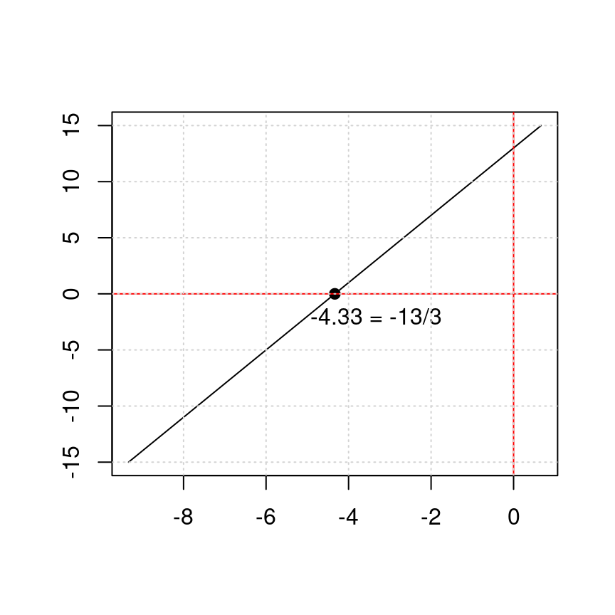

Capítulo 5 Simplificación
5.1 Ejemplo1 (Simplificación)
Simplificar la expresión racional
\[ \dfrac{2x^2-x-1}{x^2-1} \]
\[\begin{equation} \label{eq4} \begin{split} \dfrac{2x^2-x-1}{x^2-1} & =\dfrac{(2x+1)(x-1)}{(x-1)(x+1)} \\ & = \dfrac{(2x+1)}{(x+1)}\\ \dfrac{2x^2-x-1}{x^2-1} & = \dfrac{(2x+1)}{(x+1)} \ \ \ \bf{\text{Respuesta esperada}} \end{split} \end{equation}\]
5.2 Ejemplo2 (Simplificación)
Simplificar la expresión racional
\[ \dfrac{4x^2+11x-3}{2-5x-12x^2} \]
\[\begin{equation} \label{eq5} \begin{split} \dfrac{4x^2+11x-3}{2-5x-12x^2} & =\dfrac{4x^2+11x-3}{-12x^2-5x+2} \\ & = \dfrac{(4x-1).(x+3)}{(1-4x).(2+3x)}\\ & = \dfrac{(4x-1).(x+3)}{-(4x-1).(3x+2)} \ \ \ \text{Recordar:} \ \ \ \ -(b-a)=a-b \\ \dfrac{4x^2+11x-3}{2-5x-12x^2} & = \dfrac{(x+3)}{-(3x+2)} \ \ \ \text{Recordar:} \ \ \ \ -\dfrac{a}{d}=\dfrac{a}{-d} =\dfrac{-a}{d}\\ \dfrac{4x^2+11x-3}{2-5x-12x^2} & = -\dfrac{(x+3)}{(3x+2)} \ \ \ \bf{\text{Respuesta esperada}} \end{split} \end{equation}\]
5.3 Ejemplo3 (Simplificación)
Simplificar la expresión racional
\[ \dfrac{x}{5x^2+21x+4}.\dfrac{25x^2+10x+1}{3x^2+x} \]
\[\begin{equation} \label{eq6} \begin{split} \dfrac{x}{5x^2+21x+4}.\dfrac{25x^2+10x+1}{3x^2+x} & =\dfrac{x(25x^2+10x+1)}{(5x^2+21x+4)(3x^2+x)} \ \ \ \text{Recordar:} \ \ \ \ \dfrac{a.b}{c.d}=\dfrac{a}{c}.\dfrac{b}{d} \\ & = \dfrac{x.(5x+1).(5x+1)}{(5x+1).(x+4).x.(3x+1)}\\ & = \dfrac{(5x+1)}{(x+4).(3x+1)}\ \ \ \bf{\text{Respuesta esperada}} \end{split} \end{equation}\]
5.4 Ejemplo4 (Simplificación)
Simplificar la expresión racional
\[ \dfrac{2x^2+9x+10}{x^2+4x+3}\div\dfrac{2x+5}{x+3}=\dfrac{\dfrac{2x^2+9x+10}{x^2+4x+3}}{\dfrac{2x+5}{x+3}} \]
\[\begin{equation} \label{eq7} \begin{split} \dfrac{2x^2+9x+10}{x^2+4x+3}\div\dfrac{2x+5}{x+3} & =\dfrac{2x^2+9x+10}{x^2+4x+3}\times \dfrac{x+3}{2x+5} \ \ \ \text{Recordar:} \ \ \ \ \dfrac{\dfrac{a}{c}}{\dfrac{b}{d}}=\dfrac{a}{c}\times\dfrac{d}{b} \\ & = \dfrac{(2x+5).(x+2).(x+3)}{(x+3).(x+1).(2x+5)}\\ & = \dfrac{x+2}{x+1}\ \ \ \bf{\text{Respuesta esperada}} \end{split} \end{equation}\]
5.5 Ejemplo5 (Simplificación)
Simplificar la expresión racional
\[ \dfrac{\dfrac{1}{x}-\dfrac{x}{x+1}}{1+\dfrac{1}{x}} \]
Primero: Se realiza la resta en el numerador
\[\begin{equation} \label{eq9} \begin{split} \dfrac{1}{x}-\dfrac{x}{x+1} & = \dfrac{1.(x+1)-x.x}{x.(x+1)} \ \ \ \text{Recordar:} \ \ \ \ \dfrac{a}{b} \pm \dfrac{c}{d} =\dfrac{ad \pm bc}{bd}\\ & = \dfrac{x+1-x^2}{x.(x+1)} \\ & = \dfrac{-x^2+x+1}{x.(x+1)} \ \ \ \text{donde se ordeno los términos del numerador} \\ \end{split} \end{equation}\]
Segundo: Se realiza la suma en el denominador
\[\begin{equation} \label{eq10} \begin{split} 1+\dfrac{1}{x} & = \dfrac{1}{1}+\dfrac{1}{x} \\ & = \dfrac{1.x+1.1}{1.x} \ \ \ \text{Recordar:} \ \ \ \ \dfrac{a}{b} \pm \dfrac{c}{d} =\dfrac{ad \pm bc}{bd}\\ & = \dfrac{x+1}{x} \\ \end{split} \end{equation}\]
Tercero: Se sustituyen el nuevo numerador y el nuevo denominador
\[\begin{equation} \label{eq11} \begin{split} \dfrac{\dfrac{-x^2+x+1}{x.(x+1)}}{\dfrac{x+1}{x}} & =\dfrac{-x^2+x+1}{x.(x+1)}\times \dfrac{x}{x+1} \ \ \ \text{Recordar:} \ \ \ \ \dfrac{\dfrac{a}{c}}{\dfrac{b}{d}}=\dfrac{a}{c}\times\dfrac{d}{b} \\ & = \dfrac{(-x^2+x+1).x}{x.(x+1).(x+1)}\\ & = \dfrac{(-x^2+x+1)}{(x+1).(x+1)}\\ & = \dfrac{-x^2+x+1}{(x+1)^2}\ \ \ \bf{\text{Respuesta esperada}} \end{split} \end{equation}\]
5.6 Ejemplo6 (Simplificación)
Simplificar la expresión
\[ (a^{-1}+b^{-1})^{-1}=\dfrac{1}{a^{-1}+b^{-1}} \]
\[\begin{equation} \label{eq12} \begin{split} \dfrac{1}{a^{-1}+b^{-1}} & = \dfrac{1}{\dfrac{1}{a}+\dfrac{1}{b}} \\ & = \dfrac{\dfrac{1}{1}}{\dfrac{1.b+1.a}{a.b}} \ \ \ \text{Recordar:} \ \ \ \ \dfrac{a}{b} \pm \dfrac{c}{d} =\dfrac{ad \pm bc}{bd}\\ & = \dfrac{1}{1} \times \dfrac{ab}{b+a} \ \ \ \text{Recordar:} \ \ \ \ \dfrac{\dfrac{a}{c}}{\dfrac{b}{d}}=\dfrac{a}{c}\times\dfrac{d}{b} \\ & = \dfrac{ab}{b+a}\ \ \ \bf{\text{Respuesta esperada}} \end{split} \end{equation}\]
5.7 Ejemplo7 (Simplificación)
Simplificar la expresión
\[ \dfrac{x}{\sqrt{y}}+\dfrac{y}{\sqrt{x}} \]
\[\begin{equation} \label{eq13} \begin{split} \dfrac{x}{\sqrt{y}}+\dfrac{y}{\sqrt{x}} & =\dfrac{x.\sqrt{x}+y.\sqrt{y}}{\sqrt{x}.\sqrt{y}} \\ & = \dfrac{x.\sqrt{x}+y.\sqrt{y}}{\sqrt{x.y}} \\ & = \dfrac{(x.\sqrt{x}+y.\sqrt{y}).\sqrt{x.y}}{\sqrt{x.y}.\sqrt{x.y}} \\ & = \dfrac{(x.\sqrt{x}+y.\sqrt{y}).\sqrt{x}.\sqrt{y}}{(\sqrt{x.y})^2} \\ & = \dfrac{x.(\sqrt{x})^2\sqrt{y}+y.(\sqrt{y})^2\sqrt{x}}{(\sqrt{x.y})^2} \\ & = \dfrac{(x^2.\sqrt{y}+y^2.\sqrt{x})}{(\sqrt{x.y})^2} \\ \dfrac{x}{\sqrt{y}}+\dfrac{y}{\sqrt{x}} & = \dfrac{x^2.\sqrt{y}+y^2.\sqrt{x}}{x.y} \ \ \ \bf{\text{Respuesta esperada}} \end{split} \end{equation}\]
5.8 Despeje de variable (Tema1)
5.8.1 Ejemplo1 (Despeje de variable)
Despejar la letra \(r\) en la ecuación \[ C=2\pi r \] \[\begin{equation} \label{eq20} \begin{split} \text{lado Izquierdo}& = \text{lado Derecho}\\ C & = 2\pi r \\ \dfrac{C}{2\pi}& =r \ \ \ \bf{\text{Respuesta esperada}} \end{split} \end{equation}\]
5.8.2 Ejemplo2 (Despeje de variable)
Despejar la letra \(x\) en la ecuación \[ 3x+5=0 \] \[\begin{equation} \label{eq21} \begin{split} \text{lado Izquierdo}& = \text{lado Derecho}\\ 3x+5 & = 0 \\ 3x & =-5 \\ x& = \dfrac{-5}{3}\ \ \ \bf{\text{Respuesta esperada}}\\ \dfrac{1x^1}{1}& = x\ \ \ \text{El significado de que}\ \ \ x \ \ \ \text{esta despejada} \end{split} \end{equation}\]
\[\begin{equation} \label{eq25} \boxed{x = \dfrac{-5}{3}} \end{equation}\]
5.8.3 Ejemplo3 (Despeje de variable)
Despejar la letra \(l\) en la ecuación \[ P=2w+2l \] \[\begin{equation} \label{eq22} \begin{split} \text{lado Izquierdo}& = \text{lado Derecho}\\ P & = 2w+2l \\ P-2w & =2l \\ \dfrac{P-2w}{2}& = l \ \ \ \bf{\text{Respuesta esperada}}\\ \dfrac{1l^1}{1}& =l \ \ \ \text{El significado de que}\ \ \ l \ \ \ \text{esta despejada} \end{split} \end{equation}\]
\[\begin{equation} \label{eq26} \boxed{\dfrac{P-2w}{2} = l } \end{equation}\]
5.8.4 Ejemplo4 (Despeje de variable)
Despejar la letra \(t\) en la ecuación \[ l=Prt \] \[\begin{equation} \label{eq23} \begin{split} \text{lado Izquierdo}& = \text{lado Derecho}\\ l & = Prt \\ \dfrac{l}{Pr}& = t \ \ \ \bf{\text{Respuesta esperada}}\\ \dfrac{1t^1}{1}& =t \ \ \ \text{El significado de que}\ \ \ t \ \ \ \text{esta despejada} \end{split} \end{equation}\]
\[\begin{equation} \label{eq27} \boxed{\dfrac{l}{Pr} = t} \end{equation}\]
5.8.5 Ejemplo5 (Despeje de variable)
Despejar la letra \(h\) en la ecuación \[ S=2\pi rh \] \[\begin{equation} \label{eq24} \begin{split} \text{lado Izquierdo}& = \text{lado Derecho}\\ S & = 2\pi rh \\ \dfrac{S}{2\pi r}& = h \ \ \ \bf{\text{Respuesta esperada}}\\ \dfrac{1h^1}{1}& =h \ \ \ \text{El significado de que}\ \ \ h \ \ \ \text{esta despejada} \end{split} \end{equation}\]
\[\begin{equation} \label{eq28} \boxed{\dfrac{S}{2\pi r} = h} \end{equation}\]
5.8.6 Ejemplo6 (Despeje de variable)
Despejar la letra \(r\) en la ecuación \[ V=\dfrac{1}{3}\pi r^2h \] \[\begin{equation} \label{eq29} \begin{split} \text{lado Izquierdo}& = \text{lado Derecho}\\ V & = \dfrac{1}{3}\pi r^2h \\ 3V& = \pi r^2h \\ \dfrac{3V}{\pi h} & = r^2 \\ \pm \sqrt{\dfrac{3V}{\pi h}} & = r \ \ \ \bf{\text{Recordar}} \sqrt{r^2}=r\\ \sqrt{\dfrac{3V}{\pi h}} & = r \ \ \ \bf{\text{Respuesta esperada ya que }} r>0 \\ \dfrac{1r^1}{1}& =r \ \ \ \text{El significado de que}\ \ \ r \ \ \ \text{esta despejada} \end{split} \end{equation}\]
\[\begin{equation} \label{eq30} \boxed{\sqrt{\dfrac{3V}{\pi h}} = r} \end{equation}\]
5.8.7 Ejemplo7 (Despeje de variable)
Despejar la letra \(m\) en la ecuación \[ F=g\dfrac{mM}{d^2} \] \[\begin{equation} \label{eq31} \begin{split} \text{lado Izquierdo}& = \text{lado Derecho}\\ F & = g\dfrac{mM}{d^2} \\ F & = \dfrac{g}{1}.\dfrac{mM}{d^2} \\ F & = \dfrac{gmM}{d^2} \\ Fd^2 & = gmM \\ \dfrac{d^2F}{gM} & = m \ \ \ \bf{\text{Respuesta esperada}}\\ \dfrac{1m^1}{1}& =m \ \ \ \text{El significado de que}\ \ \ m \ \ \ \text{esta despejada}\\ \end{split} \end{equation}\]
\[\begin{equation} \label{eq32} \boxed{\dfrac{d^2F}{gM} = m} \end{equation}\]
5.8.8 Ejemplo8 (Despeje de variable)
Despejar la letra \(t\) en la ecuación \[ s=\dfrac{1}{2}gt^2+v_0t \] \[\begin{equation} \label{eq33} \begin{split} \text{lado Izquierdo}& = \text{lado Derecho}\\ s & = \dfrac{1}{2}gt^2+v_0t \\ 2s & = gt^2+2v_0t \\ 0 & = gt^2+2v_0t-2s \\ 0 & = At^2+Bt+C \ \ \ \text{donde}\ \ \ A=g \ \ B=2v_0 \ \ C=-2s \\ & = \ \ \text{Ahora aplicamos la fórmula del estudiante}\\ t & = \dfrac{-B \pm \sqrt{B^2-4AC}}{2A} \ \ \ \text{Recordar: Fórmula del estudiante} \\ t & = \dfrac{-2v_0 \pm \sqrt{(2v_0)^2-4g(-2s)}}{2g} \\ t & = \dfrac{-2v_0 \pm \sqrt{4(v_0)^2+8gs}}{2g} \\ t & = \dfrac{-2v_0 \pm \sqrt{4\left((v_0)^2+2gs\right)}}{2g} \\ t & = \dfrac{-2v_0 \pm \sqrt{4}\sqrt{(v_0)^2+2gs}}{2g} \\ t & = \dfrac{-2v_0 \pm 2\sqrt{(v_0)^2+2gs}}{2g} \\ t & = \dfrac{2(-v_0 \pm \sqrt{(v_0)^2+2gs})}{2g} \\ t & = \dfrac{-v_0 \pm \sqrt{(v_0)^2+2gs}}{g} \ \ \ \bf{\text{Respuesta esperada}}\\ \dfrac{1t^1}{1}& = t \ \ \ \text{El significado de que}\ \ \ t \ \ \ \text{esta despejada} \end{split} \end{equation}\]
\[\begin{equation} \label{eq34} \boxed{t = \dfrac{-v_0 \pm \sqrt{(v_0)^2+2gs}}{g}} \end{equation}\]
5.8.9 Ejemplo9 (Despeje de variable)
Despejar la letra \(C\) en la ecuación \[ A=B\sqrt[3]{\dfrac{C}{D}}-E \]
\[\begin{equation} \label{eq35} \begin{split} \text{lado Izquierdo}& = \text{lado Derecho}\\ A & = B\sqrt[3]{\dfrac{C}{D}}-E \\ A + E & = B\sqrt[3]{\dfrac{C}{D}} \\ \dfrac{A + E}{B} & = \sqrt[3]{\dfrac{C}{D}} \\ \left(\dfrac{A + E}{B}\right)^3 & = \left(\sqrt[3]{\dfrac{C}{D}}\right)^3 \\ \left(\dfrac{A + E}{B}\right)^3 & = \dfrac{C}{D} \\ D\left(\dfrac{A + E}{B}\right)^3 & = C \ \ \ \bf{\text{Respuesta esperada}} \end{split} \end{equation}\]
\[\begin{equation} \label{eq36} \boxed{D\left(\dfrac{A + E}{B}\right)^3 = C} \end{equation}\]
5.8.10 Ejemplo10 (Despeje de variable)
Despejar la letra \(B\) en la ecuación \[ A=B\sqrt[3]{\dfrac{C}{D}}-E \]
\[\begin{equation} \label{eq37} \begin{split} \text{lado Izquierdo}& = \text{lado Derecho}\\ A & = B\sqrt[3]{\dfrac{C}{D}}-E \\ A + E & = B\sqrt[3]{\dfrac{C}{D}} \\ \dfrac{A + E}{\sqrt[3]{\dfrac{C}{D}}} & = B \ \ \ \bf{\text{Respuesta esperada}} \end{split} \end{equation}\]
\[\begin{equation} \label{eq38} \boxed{\dfrac{A + E}{\sqrt[3]{\dfrac{C}{D}}} = B} \end{equation}\]
5.9 Resolución de ecuaciones
5.9.1 Ceros de una ecuación
Ceros (ó corte) con el eje \(X\) de función (ó ecuación)
Figura 5.1: Ceros (ó corte) de una función con el eje \(X\) [Imagen tomada de (swokowski1996algebra?) pág \(169\)]
5.9.3 Fórmula del estudiante
La solución para la ecuación \[ Ax^2+Bx+C=0 \]
Está dada por
\[ x=\dfrac{-B \pm\sqrt{B^2-4AC}}{2A} \]
5.9.4 Ejemplo1 (Solución de Ec)
Resolver para \(x\) en la ecuación \[ 2x-7=5x+6 \]
Primero ver la solución usando el concepto de cero (ó raíz) de una función. Para lograr esto igualamos todo a cero.
\[ \begin{split} 0 &=&-2x+7+5x+6\\ 0 &=& (5x-2x)+(7+6)\\ 0 &=& 3x+13\\ 0 &=& f(x) \end{split} \]
En este caso \(f(x)=3x+13\) es una recta y buscamos donde la recta se vuelve cero ó equivalentemente donde la recta corta al eje de las \(X\). Ese valor de corte es la solución de la ecuación planteada.
Graficando tenemos:

\[\begin{equation} \label{eq39} \begin{split} \text{lado Izquierdo} & = \text{lado Derecho}\\ 2x-5x & = 6 + 7\\ -3x & = 6 + 7 \\ -3x & = 13 \\ x &=\dfrac{13}{-3}\\ x &=-\dfrac{13}{3}\ \ \ \text{Recordar:} \ \ \ \ -\dfrac{a}{d}=\dfrac{a}{-d} =\dfrac{-a}{d}\\ \end{split} \end{equation}\]
\[\begin{equation} \label{eq40} \boxed{x =-\dfrac{13}{3}} \ \ \ \bf{\text{Respuesta esperada}} \end{equation}\]
Verificar la respuesta
\[\begin{equation} \label{eq41} \begin{split} &= \ \ \ \text{Recordar:} \ \ \ \ \dfrac{a}{b} \pm \dfrac{c}{d} =\dfrac{ad \pm bc}{bd}\\ &=\ \ \ \text{Recordar:} \ \ \ \ \dfrac{a.b}{c.d}=\dfrac{a}{c}.\dfrac{b}{d} \\ \text{lado Izquierdo}& = \text{lado Derecho}\\ 2\left(\dfrac{-13}{3}\right)- 7 & = 5\left(\dfrac{-13}{3}\right)+ 6\\ \dfrac{2}{1}\left(\dfrac{-13}{3}\right)-\dfrac{7}{1}& = \dfrac{5}{1}\left(\dfrac{-13}{3}\right) + \dfrac{6}{1}\\ \left(\dfrac{-26}{3}\right)-\dfrac{7}{1}& = \left(\dfrac{-65}{3}\right) + \dfrac{6}{1}\\ \dfrac{-26-(3)(7)}{3}& = \dfrac{-65+(3)(6)}{3}\\ \dfrac{-26-21}{3}& = \dfrac{-65+18}{3}\\ \dfrac{-47}{3}& = \dfrac{-47}{3}\\ \end{split} \end{equation}\]
NOTA: En general cuando se realiza la verificación de la respuesta obtenida en una ecuación, el resultado de la derecha` es equivalente al resultado de la izquierda, esto muestra que se obtuvo el resultado apropiado para la ecuación.
5.9.5 Ejemplo2 (Solución de Ec)
Resolver para \(z\) en la ecuación \[ 2- \dfrac{1}{z+1}=\dfrac{z}{z+1} \]
\[\begin{equation} \label{eq42} \begin{split} \text{lado Izquierdo} & = \text{lado Derecho}\\ (z+1)\left( 2 - \dfrac{1}{z+1}\right) & = (z+1)\left(\dfrac{z}{z+1}\right) \\ (z+1).(2)-(z+1).\left(\dfrac{1}{z+1}\right) & = (z+1)\left(\dfrac{z}{z+1}\right) \\ (z+1).(2)- 1 & = z \\ 2z + 2 - 1 & = z \\ 2z + 1 & = z \\ 2z - z & = -1 \\ z & = -1 \ \ \ \bf{\text{Respuesta esperada}} \end{split} \end{equation}\]
\[\begin{equation} \label{eq43} \boxed{z = -1} \ \ \ \bf{\text{Respuesta esperada}} \end{equation}\]
Verificar la respuesta
\[\begin{equation} \label{eq44} \begin{split} \text{lado Izquierdo} & = \text{lado Derecho}\\ 2 - \dfrac{1}{-1+1} & = \dfrac{-1}{-1+1} \\ 2 - \dfrac{1}{0} & = \dfrac{-1}{0} \\ IND & = IND \ \ \ \bf{\text{Respuesta la ec no tiene solución}} \end{split} \end{equation}\]
5.9.6 Ejemplo3 (Solución de Ec)
Resolver para \(x\) en la ecuación \[ \dfrac{1}{x} + \dfrac{1}{x-4}=\dfrac{2}{x^2-4x} \]
\[\begin{equation} \label{eq45} \begin{split} \text{lado Izquierdo} & = \text{lado Derecho}\\ \dfrac{1}{x} + \dfrac{1}{x-4} & = \dfrac{2}{x^2-4x} \\ x.(x-4)\left(\dfrac{1}{x} + \dfrac{1}{x-4}\right) & = x.(x-4)\left(\dfrac{2}{x(x-4)}\right) \\ x.(x-4).\dfrac{1}{x} + x.(x-4).\dfrac{1}{x-4} & = x.(x-4).\dfrac{2}{x(x-4)} \\ (x-4) + x.1 & = 2 \\ x+x-4 & = 2 \\ 2x-4 & = 2 \\ 2x & = 4+2 \\ 2x & = 6 \\ x & = \dfrac{6}{2}\\ x & = 3 \ \ \ \bf{\text{Respuesta esperada}} \end{split} \end{equation}\]
\[\begin{equation} \label{eq46} \boxed{x = 3} \end{equation}\]
Verificar la respuesta
\[\begin{equation} \label{eq47} \begin{split} \text{lado Izquierdo} & = \text{lado Derecho}\\ \dfrac{1}{x} + \dfrac{1}{x-4} & =\dfrac{2}{x^2-4x} \\ \text{Sustituir }x=3 &\\ \dfrac{1}{3} + \dfrac{1}{3-4} & = \dfrac{2}{(3)^2-4(3)} \\ \dfrac{1}{3} + \dfrac{1}{-1} & = \dfrac{2}{9-12} \\ \dfrac{1}{3} - \dfrac{1}{1} & = \dfrac{2}{-3} \\ \dfrac{1}{3} - \dfrac{3}{3} & = -\dfrac{2}{3} \\ \dfrac{1-3}{3} & = -\dfrac{2}{3} \\ \dfrac{-2}{3} & = -\dfrac{2}{3} \\ -\dfrac{2}{3} & = -\dfrac{2}{3} \\ \end{split} \end{equation}\]
5.9.7 Ejemplo4 (Solución de Ec)
Resolver para \(x \neq 0\) en la ecuación \[ \dfrac{1}{2\sqrt{x}} - \dfrac{2}{\sqrt{x}}=\dfrac{5}{\sqrt{x}} \]
\[\begin{equation} \label{eq48} \begin{split} \text{lado Izquierdo} & = \text{lado Derecho}\\ \dfrac{1}{2\sqrt{x}} - \dfrac{2}{\sqrt{x}} & =\dfrac{5}{\sqrt{x}}\\ \sqrt{x}.\left( \dfrac{1}{2\sqrt{x}} - \dfrac{2}{\sqrt{x}} \right) & = \sqrt{x}.\left( \dfrac{5}{\sqrt{x}} \right)\\ \sqrt{x}.\dfrac{1}{2\sqrt{x}} - \sqrt{x}.\dfrac{2}{\sqrt{x}} & =\sqrt{x}.\dfrac{5}{\sqrt{x}}\\ \dfrac{1}{2} - \dfrac{2}{1} & =\dfrac{5}{1}\\ \dfrac{1}{2} - \dfrac{4}{2} & = 5\\ \dfrac{1-4}{2} & = 5\\ \dfrac{-3}{2} & = 5\\ \text{Absurdo!} & \\ \text{La ecuación no tiene solución} & \ \ \ \bf{\text{Respuesta esperada}} \end{split} \end{equation}\]